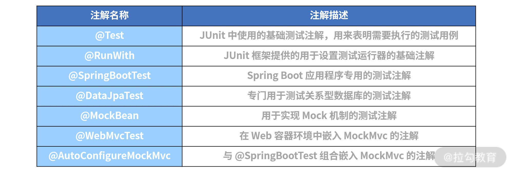

- 00 开篇词 从零开始：为什么要学习 Spring Boot？.md.html
- 01 家族生态：如何正确理解 Spring 家族的技术体系？.md.html
- 02 案例驱动：如何剖析一个 Spring Web 应用程序？.md.html
- 03 多维配置：如何使用 Spring Boot 中的配置体系？.md.html
- 04 定制配置：如何创建和管理自定义的配置信息？.md.html
- 05 自动配置：如何正确理解 Spring Boot 自动配置实现原理？.md.html
- 06 基础规范：如何理解 JDBC 关系型数据库访问规范？.md.html
- 07 数据访问：如何使用 JdbcTemplate 访问关系型数据库？.md.html
- 08 数据访问：如何剖析 JdbcTemplate 数据访问实现原理？.md.html
- 09 数据抽象：Spring Data 如何对数据访问过程进行统一抽象？.md.html
- 10 ORM 集成：如何使用 Spring Data JPA 访问关系型数据库？.md.html
- 11 服务发布：如何构建一个 RESTful 风格的 Web 服务？.md.html
- 12 服务调用：如何使用 RestTemplate 消费 RESTful 服务？.md.html
- 13 服务调用：如何正确理解 RestTemplate 远程调用实现原理？.md.html
- 14 消息驱动：如何使用 KafkaTemplate 集成 Kafka？.md.html
- 15 消息驱动：如何使用 JmsTemplate 集成 ActiveMQ？.md.html
- 16 消息驱动：如何使用 RabbitTemplate 集成 RabbitMQ？.md.html
- 17 安全架构：如何理解 Spring 安全体系的整体架构？.md.html
- 18 用户认证：如何基于 Spring Security 构建用户认证体系？.md.html
- 19 服务授权：如何基于 Spring Security 确保请求安全访问？.md.html
- 20 服务监控：如何使用 Actuator 组件实现系统监控？.md.html
- 21 指标定制：如何实现自定义度量指标和 Actuator 端点？.md.html
- 22 运行管理：如何使用 Admin Server 管理 Spring 应用程序？.md.html
- 23 数据测试：如何使用 Spring 测试数据访问层组件？.md.html
- 24 服务测试：如何使用 Spring 测试 Web 服务层组件？.md.html
- 结束语 以终为始：Spring Boot 总结和展望.md.html
24 服务测试：如何使用 Spring 测试 Web 服务层组件？
23 讲我们介绍了对数据访问层进行测试的方法，这一讲将着重介绍对三层架构中的另外两层（Service 层和 Controller 层）的测试方法。
与位于底层的数据访问层不同，这两层的组件都依赖于它的下一层组件，即 Service 层依赖于数据访问层，而 Controller 层依赖于 Service 层。因此，对这两层进行测试时，我们将使用不同的方案和技术。
使用 Environment 测试配置信息
在《定制配置：如何创建自定义的配置信息？》中，我们介绍了自定义配置信息的实现方式。而在 Spring Boot 应用程序中，Service 层通常依赖于配置文件，所以我们也需要对配置信息进行测试。
配置信息的测试方案分为两种，第一种依赖于物理配置文件，第二种则是在测试时动态注入配置信息。
第一种测试方案比较简单，在 src/test/resources 目录下添加配置文件时，Spring Boot 能读取这些配置文件中的配置项并应用于测试案例中。在介绍具体的实现过程之前，我们有必要先来了解一下 Environment 接口，该接口定义如下：
public interface Environment extends PropertyResolver {
String[] getActiveProfiles();
String[] getDefaultProfiles();
boolean acceptsProfiles(String... profiles);
}
在上述代码中我们可以看到，Environment 接口的主要作用是处理 Profile，而它的父接口 PropertyResolver 定义如下代码所示：
public interface PropertyResolver {
boolean containsProperty(String key);
String getProperty(String key);
String getProperty(String key, String defaultValue);
<T> T getProperty(String key, Class<T> targetType);
<T> T getProperty(String key, Class<T> targetType, T defaultValue);
String getRequiredProperty(String key) throws IllegalStateException;
<T> T getRequiredProperty(String key, Class<T> targetType) throws IllegalStateException;
String resolvePlaceholders(String text);
String resolveRequiredPlaceholders(String text) throws IllegalArgumentException;
}
显然，PropertyResolver 的作用是根据各种配置项的 Key 获取配置属性值。
现在，假设 src/test/resources 目录中的 application.properties 存在如下配置项：
springcss.order.point = 10
那么，我们就可以设计如下所示的测试用例了。
@RunWith(SpringRunner.class)
@SpringBootTest
public class EnvironmentTests{
@Autowired
public Environment environment;
@Test
public void testEnvValue(){
Assert.assertEquals(10, Integer.parseInt(environment.getProperty("springcss.order.point")));
}
}
这里我们注入了一个 Environment 接口，并调用了它的 getProperty 方法来获取测试环境中的配置信息。
除了在配置文件中设置属性，我们也可以使用 @SpringBootTest 注解指定用于测试的属性值，示例代码如下：
@RunWith(SpringRunner.class)
@SpringBootTest(properties = {" springcss.order.point = 10"})
public class EnvironmentTests{
@Autowired
public Environment environment;
@Test
public void testEnvValue(){
Assert.assertEquals(10, Integer.parseInt(environment.getProperty("springcss.order.point")));
}
}
使用 Mock 测试 Service 层
正如这一讲开篇时提到，Service 层依赖于数据访问层。因此，对 Service 层进行测试时，我们还需要引入新的技术体系，也就是应用非常广泛的 Mock 机制。
接下来，我们先看一下 Mock 机制的基本概念。
Mock 机制
Mock 的意思是模拟，它可以用来对系统、组件或类进行隔离。
在测试过程中，我们通常关注测试对象本身的功能和行为，而对测试对象涉及的一些依赖，仅仅关注它们与测试对象之间的交互（比如是否调用、何时调用、调用的参数、调用的次数和顺序，以及返回的结果或发生的异常等），并不关注这些被依赖对象如何执行这次调用的具体细节。因此，Mock 机制就是使用 Mock 对象替代真实的依赖对象，并模拟真实场景来开展测试工作。
使用 Mock 对象完成依赖关系测试的示意图如下所示：
Mock 对象与依赖关系测试示意图
从图中可以看出，在形式上，Mock 是在测试代码中直接 Mock 类和定义 Mock 方法的行为，通常测试代码和 Mock 代码放一起。因此，测试代码的逻辑从测试用例的代码上能很容易地体现出来。
下面我们一起看一下如何使用 Mock 测试 Service 层。
使用 Mock
23 讲中我们介绍了 @SpringBootTest 注解中的 SpringBootTest.WebEnvironment.MOCK 选项，该选项用于加载 WebApplicationContext 并提供一个 Mock 的 Servlet 环境，内置的 Servlet 容器并没有真实启动。接下来，我们针对 Service 层演示一下这种测试方式。
首先，我们来看一种简单场景，在 customer-service 中存在如下 CustomerTicketService 类：
@Service
public class CustomerTicketService {
@Autowired
private CustomerTicketRepository customerTicketRepository;
public CustomerTicket getCustomerTicketById(Long id) {
return customerTicketRepository.getOne(id);
}
…
}
这里我们可以看到，以上方法只是简单地通过 CustomerTicketRepository 完成了数据查询操作。
显然，对以上 CustomerTicketService 进行集成测试时，还需要我们提供一个 CustomerTicketRepository 依赖。
下面，我们通过以下代码演示一下如何使用 Mock 机制完成对 CustomerTicketRepository 的隔离。
@RunWith(SpringRunner.class)
@SpringBootTest(webEnvironment = SpringBootTest.WebEnvironment.MOCK)
public class CustomerServiceTests {
@MockBean
private CustomerTicketRepository customerTicketRepository;
@Test
public void testGetCustomerTicketById() throws Exception {
Long id = 1L;
Mockito.when(customerTicketRepository.getOne(id)).thenReturn(new CustomerTicket(1L, 1L, "Order00001", "DemoCustomerTicket1", new Date()));
CustomerTicket actual = customerTicketService.getCustomerTicketById(id);
assertThat(actual).isNotNull();
assertThat(actual.getOrderNumber()).isEqualTo("Order00001");
}
}
首先，我们通过 @MockBean 注解注入了 CustomerTicketRepository；然后，基于第三方 Mock 框架 Mockito 提供的 when/thenReturn 机制完成了对 CustomerTicketRepository 中 getCustomerTicketById() 方法的 Mock。
当然，如果你希望在测试用例中直接注入真实的CustomerTicketRepository，这时就可以使用@SpringBootTest 注解中的 SpringBootTest.WebEnvironment.RANDOM_PORT 选项，示例代码如下：
@RunWith(SpringRunner.class)
@SpringBootTest(webEnvironment = SpringBootTest.WebEnvironment.RANDOM_PORT)
public class CustomerServiceTests {
@Autowired
private CustomerTicketRepository customerTicketRepository;
@Test
public void testGetCustomerTicketById() throws Exception {
Long id = 1L;
CustomerTicket actual = customerTicketService.getCustomerTicketById(id);
assertThat(actual).isNotNull();
assertThat(actual.getOrderNumber()).isEqualTo("Order00001");
}
}
运行上述代码后就会以一个随机的端口启动整个 Spring Boot 工程，并从数据库中真实获取目标数据进行验证。
以上集成测试的示例中只包含了对 Repository 层的依赖，而有时候一个 Service 中可能同时包含 Repository 和其他 Service 类或组件，下面回到如下所示的 CustomerTicketService 类：
@Service
public class CustomerTicketService {
@Autowired
private OrderClient orderClient;
private OrderMapper getRemoteOrderByOrderNumber(String orderNumber) {
return orderClient.getOrderByOrderNumber(orderNumber);
}
…
}
这里我们可以看到，在该代码中，除了依赖 CustomerTicketRepository 之外，还同时依赖了 OrderClient。
请注意：以上代码中的 OrderClient 是在 customer-service 中通过 RestTemplate 访问 order-service 的远程实现类，其代码如下所示：
@Component
public class OrderClient {
@Autowired
RestTemplate restTemplate;
public OrderMapper getOrderByOrderNumber(String orderNumber) {
ResponseEntity<OrderMapper> restExchange = restTemplate.exchange(
"http://localhost:8083/orders/{orderNumber}", HttpMethod.GET, null,
OrderMapper.class, orderNumber);
OrderMapper result = restExchange.getBody();
return result;
}
}
CustomerTicketService 类实际上并不关注 OrderClient 中如何实现远程访问的具体过程。因为对于集成测试而言，它只关注方法调用返回的结果，所以我们将同样采用 Mock 机制完成对 OrderClient 的隔离。
对 CustomerTicketService 这部分功能的测试用例代码如下所示，可以看到，我们采用的是同样的测试方式。
@Test
public void testGenerateCustomerTicket() throws Exception {
Long accountId = 100L;
String orderNumber = "Order00001";
Mockito.when(this.orderClient.getOrderByOrderNumber("Order00001"))
.thenReturn(new OrderMapper(1L, orderNumber, "deliveryAddress"));
Mockito.when(this.localAccountRepository.getOne(accountId))
.thenReturn(new LocalAccount(100L, "accountCode", "accountName"));
CustomerTicket actual = customerTicketService.generateCustomerTicket(accountId, orderNumber);
assertThat(actual.getOrderNumber()).isEqualTo(orderNumber);
}
这里提供的测试用例演示了 Service 层中进行集成测试的各种手段，它们已经能够满足一般场景的需要。
测试 Controller 层
对 Controller 层进行测试之前，我们先来提供一个典型的 Controller 类，它来自 customer-service，如下代码所示：
@RestController
@RequestMapping(value="customers")
public class CustomerController {
@Autowired
private CustomerTicketService customerTicketService;
@PostMapping(value = "/{accountId}/{orderNumber}")
public CustomerTicket generateCustomerTicket( @PathVariable("accountId") Long accountId,
@PathVariable("orderNumber") String orderNumber) {
CustomerTicket customerTicket = customerTicketService.generateCustomerTicket(accountId, orderNumber);
return customerTicket;
}
}
关于上述 Controller 类的测试方法，相对来说比较丰富，比如有 TestRestTemplate、@WebMvcTest 注解和 MockMvc 这三种，下面我们逐一进行讲解。
使用 TestRestTemplate
Spring Boot 提供的 TestRestTemplate 与 RestTemplate 非常类似，只不过它专门用在测试环境中。
如果我们想在测试环境中使用 @SpringBootTest，则可以直接使用 TestRestTemplate 来测试远程访问过程，示例代码如下：
@RunWith(SpringRunner.class)
@SpringBootTest(webEnvironment = SpringBootTest.WebEnvironment.RANDOM_PORT)
public class CustomerController2Tests {
@Autowired
private TestRestTemplate testRestTemplate;
@MockBean
private CustomerTicketService customerTicketService;
@Test
public void testGenerateCustomerTicket() throws Exception {
Long accountId = 100L;
String orderNumber = "Order00001";
given(this.customerTicketService.generateCustomerTicket(accountId, orderNumber))
.willReturn(new CustomerTicket(1L, accountId, orderNumber, "DemoCustomerTicket1", new Date()));
CustomerTicket actual = testRestTemplate.postForObject("/customers/" + accountId+ "/" + orderNumber, null, CustomerTicket.class);
assertThat(actual.getOrderNumber()).isEqualTo(orderNumber);
}
}
上述测试代码中，首先，我们注意到 @SpringBootTest 注解通过使用 SpringBootTest.WebEnvironment.RANDOM_PORT 指定了随机端口的 Web 运行环境。然后，我们基于 TestRestTemplate 发起了 HTTP 请求并验证了结果。
特别说明：这里使用 TestRestTemplate 发起请求的方式与 RestTemplate 完全一致，你可以对《服务调用：如何使用 RestTemplate 消费 RESTful 服务？》的内容进行回顾。
使用 @WebMvcTest 注解
接下来测试方法中，我们将引入一个新的注解 @WebMvcTest，该注解将初始化测试 Controller 所必需的 Spring MVC 基础设施，CustomerController 类的测试用例如下所示：
@RunWith(SpringRunner.class)
@WebMvcTest(CustomerController.class)
public class CustomerControllerTestsWithMockMvc {
@Autowired
private MockMvc mvc;
@MockBean
private CustomerTicketService customerTicketService;
@Test
public void testGenerateCustomerTicket() throws Exception {
Long accountId = 100L;
String orderNumber = "Order00001";
given(this.customerTicketService.generateCustomerTicket(accountId, orderNumber))
.willReturn(new CustomerTicket(1L, 100L, "Order00001", "DemoCustomerTicket1", new Date()));
this.mvc.perform(post("/customers/" + accountId+ "/" + orderNumber).accept(MediaType.APPLICATION_JSON)).andExpect(status().isOk());
}
}
以上代码的关键是 MockMvc 工具类，所以接下来我们有必要对它进一步展开说明。
MockMvc 类提供的基础方法分为以下 6 种，下面一一对应来看下。
- Perform：执行一个 RequestBuilder 请求，会自动执行 SpringMVC 流程并映射到相应的 Controller 进行处理。
- get/post/put/delete：声明发送一个 HTTP 请求的方式，根据 URI 模板和 URI 变量值得到一个 HTTP 请求，支持 GET、POST、PUT、DELETE 等 HTTP 方法。
- param：添加请求参数，发送 JSON 数据时将不能使用这种方式，而应该采用 @ResponseBody 注解。
- andExpect：添加 ResultMatcher 验证规则，通过对返回的数据进行判断来验证 Controller 执行结果是否正确。
- andDo：添加 ResultHandler 结果处理器，比如调试时打印结果到控制台。
- andReturn：最后返回相应的 MvcResult，然后执行自定义验证或做异步处理。
执行该测试用例后，从输出的控制台日志中我们不难发现，整个流程相当于启动了 CustomerController 并执行远程访问，而 CustomerController 中使用的 CustomerTicketService 则做了 Mock。
显然，测试 CustomerController 的目的在于验证其返回数据的格式和内容。在上述代码中，我们先定义了 CustomerController 将会返回的 JSON 结果，然后通过 perform、accept 和 andExpect 方法模拟了 HTTP 请求的整个过程，最终验证了结果的正确性。
使用 @AutoConfigureMockMvc 注解
请注意 @SpringBootTest 注解不能和 @WebMvcTest 注解同时使用。
在使用 @SpringBootTest 注解的场景下，如果我们想使用 MockMvc 对象，那么可以引入 @AutoConfigureMockMvc 注解。
通过将 @SpringBootTest 注解与 @AutoConfigureMockMvc 注解相结合，@AutoConfigureMockMvc 注解将通过 @SpringBootTest 加载的 Spring 上下文环境中自动配置 MockMvc 这个类。
使用 @AutoConfigureMockMvc 注解的测试代码如下所示：
@RunWith(SpringRunner.class)
@SpringBootTest
@AutoConfigureMockMvc
public class CustomerControllerTestsWithAutoConfigureMockMvc {
@Autowired
private MockMvc mvc;
@MockBean
private CustomerTicketService customerTicketService;
@Test
public void testGenerateCustomerTicket() throws Exception {
Long accountId = 100L;
String orderNumber = "Order00001";
given(this.customerTicketService.generateCustomerTicket(accountId, orderNumber))
.willReturn(new CustomerTicket(1L, 100L, "Order00001", "DemoCustomerTicket1", new Date()));
this.mvc.perform(post("/customers/" + accountId+ "/" + orderNumber).accept(MediaType.APPLICATION_JSON)).andExpect(status().isOk());
}
}
在上述代码中，我们使用了 MockMvc 工具类完成了对 HTTP 请求的模拟，并基于返回状态验证了 Controller 层组件的正确性。
Spring Boot 中的测试注解总结
通过前面内容的学习，相信你已经感受到了各种测试注解在测试 Spring Boot 应用程序的过程中所发挥的核心作用。
如下所示表格，我们罗列了一些经常使用的测试注解及其描述。

小结与预告
对于一个 Web 应用程序而言，Service 层和 Web 层组件的测试是核心关注点。这一讲我们通过 Mock 机制实现了 Service 层的测试，并引入了三种不同的方法对 Controller 层组件完成验证。
这里给你留一道思考题：在使用 Spring Boot 测试 Web 应用程序时，你知道常见的测试注解有哪些？欢迎在留言区进行互动、交流。
讲完测试组件之后，我们将进入本专栏的最后一讲。在结束语中，我们将对 Spring Boot 进行总结，并对它的后续发展进行展望。